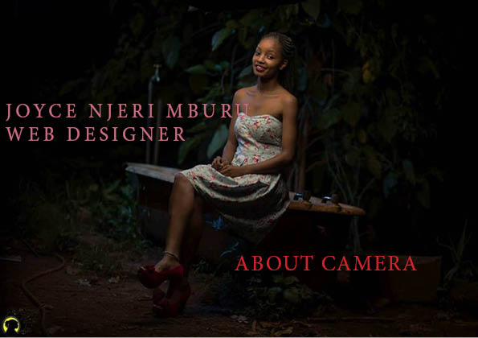

ABOUT HER.
Joyce is a time conscious and responsible lady, who is currently pursuing a diploma on Information Technology in Akirachix Institution. She is proficient in redesigning websites appealing to the user. Has skills in client relations and negotiation, which she acquired from Highlands hotel as a cashier. She is looking forward to working in a collaborative and competitive environment, where ideas can be freely shared, with the aim of adding value to the company’s financial background.She is proficient in making logos using adobe illustrator ,Illustration for magazines and newspapers using adobe indesign.